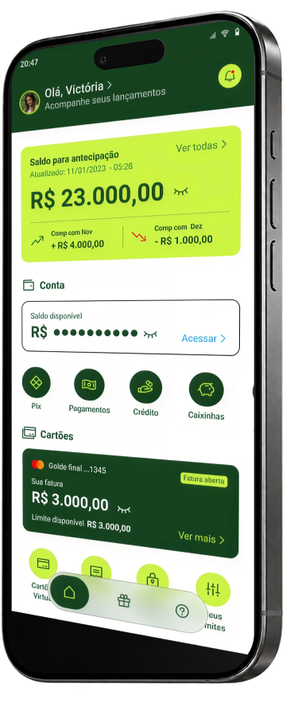

01 / ORDINY · SAAS
Uma agenda.
Um produto inteiro.
Da experiência à aplicação funcional: UX/UI, desenvolvimento, arquitetura e infraestrutura no mesmo projeto.
MEU PAPEL
Produto · UX/UI · Desenvolvimento
Ler estudo de caso ↗
PRODUCT DESIGNER × UX ENGINEER
Transformo regras complexas em experiências claras, do primeiro fluxo à interface em produção.
7+ ANOS · FINTECH · SAAS · SERVIÇOS
Thinking in journeys. Designing in systems.
01 / TRABALHOS SELECIONADOS
Três contextos. Diferentes desafios. Uma ligação entre clareza, sistema e entrega.
01 / ORDINY · SAAS
Da experiência à aplicação funcional: UX/UI, desenvolvimento, arquitetura e infraestrutura no mesmo projeto.
MEU PAPEL
Produto · UX/UI · Desenvolvimento
Ler estudo de caso ↗Antecipar é simples.
Dar segurança antes do clique
é o desafio.

02 / CASH ADVANCE · FINTECH
Antecipação de fretes com foco em clareza e segurança na jornada financeira.
Ler estudo de caso ↗
03 / LUMEN · UTILITIES
Uma interface para explorar e compreender o consumo de energia.
Ler estudo de caso ↗Veja também Aqui Limpa na coleção completa.
02 / WORKBENCH
Explore a ligação entre problema, escolha e entrega na Ordiny.
CONTEXTO / ORDINY · SAAS
Conversa, reserva, atendimento e pagamento estavam separados. O desafio é conectar a operação.
JORNADA / VISÃO DO PRODUTO
A experiência conecta informações e tarefas.
ATUAÇÃO / PRODUTO + DESIGN + CÓDIGO
Painel, link público e WhatsApp passam pela mesma validação de disponibilidade.
AGENDAMENTO / CANAIS
Os três canais revalidam a reserva na confirmação.
ENTREGA / APLICAÇÃO FUNCIONAL
Agenda, clientes, equipe, pagamentos e WhatsApp em uma aplicação em desenvolvimento.
ENTREGA / APLICAÇÃO FUNCIONAL
PRODUTO + UX/UI + DESENVOLVIMENTO
Abrir o case completo da Ordiny ↗03 / EXPERIÊNCIA
Trabalho entre produto, design e engenharia para transformar regras, restrições e necessidades em experiências utilizáveis.
Consultor UX/UI Designer · 2025 a 2026
UX/UI para soluções de BI, discovery, usabilidade e governança de design systems.
UI/UX Designer · 2024 a 2025
Usabilidade e design systems em apostas e pagamentos.
UI/UX Designer · 2022 a 2023
Onboarding, KYC e acessibilidade em jornadas financeiras.
UX Engineer · 2020 a 2023
Integração entre design e front-end em conta digital, PIX e POS.
UI/UX Designer · 2019 a 2020
Arquitetura de informação e jornadas de pagamento.
04 / VAMOS CONVERSAR
Tem uma oportunidade ou um desafio de produto? Vamos conversar.
fabiano.antero@gmail.com ↗LinkedIn ↗WhatsApp ↗